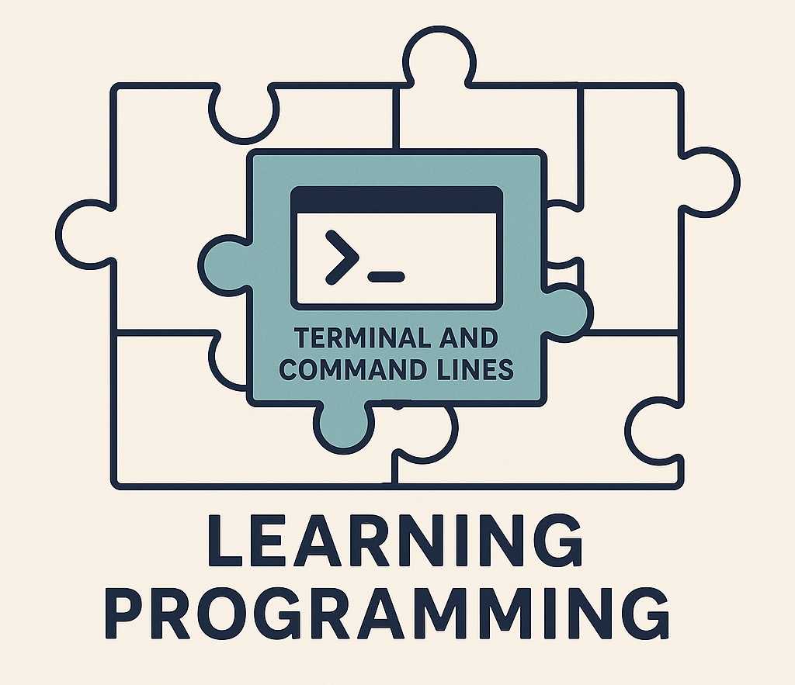
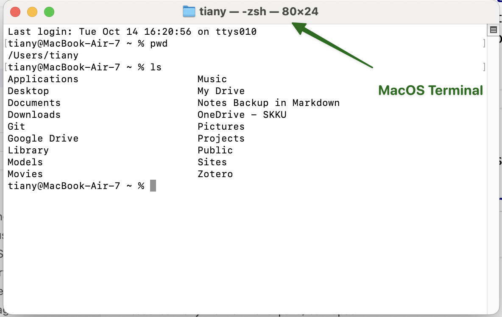
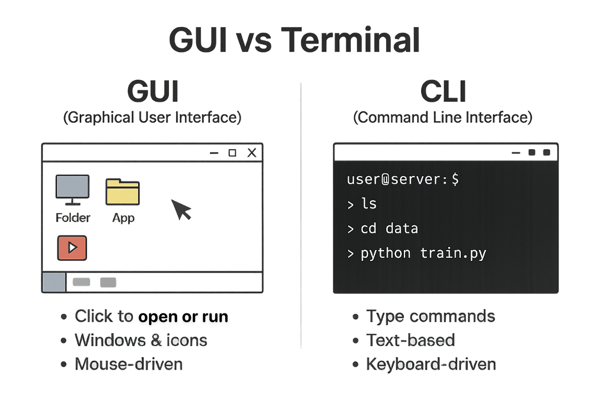
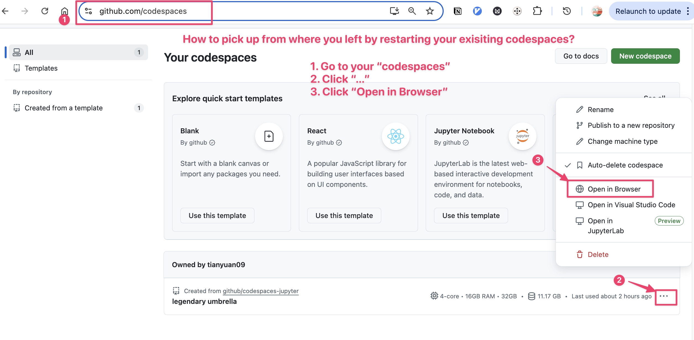
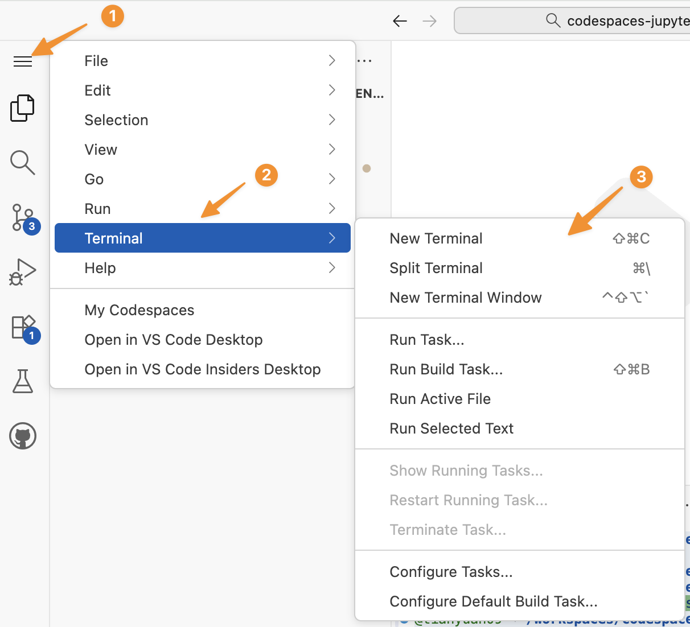
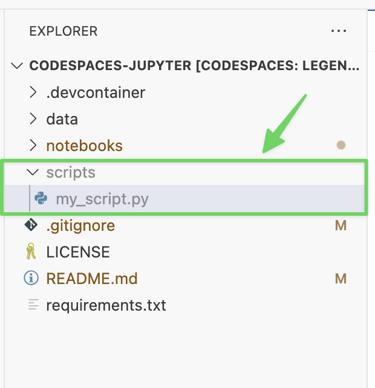

1 Command Lines and Terminal
1.1 The Missing Piece

Many students begin your programming journey by writing Python directly in platforms like Google Colab - no setup, no files, no terminals. These Jupyter notebook environments make coding easy; however, this convenience often means skipping an important part of programming: working with real Python files (.py) and using the terminal to run and manage code.
This “missing piece” is essential for understanding how programming works in real projects, servers, and production systems.
If you skip learning command line skills or avoid the terminal, you’ll struggle to work on real-world projects, collaborate effectively with teams, or operate in servers or cloud platforms — where graphical interfaces aren’t available. The terminal isn’t just a tool for experts; it’s the foundation for professional workflows in data science and engineering.
So, before diving deeper into advanced business data workflows, we’ll start by filling this gap, and learn the command lines and terminal to navigate files, run Python scripts, and operate in professional computing environments.
What You’ll Learn Next
- Main operating systems: Windows, macOS, Linux/Unix
- GUI vs terminal and why terminals matter
- Bash shell basics for programming and data science
1.2 Operating Systems Overview
Most students in this course use Windows, which dominates personal computers with roughly 70–75% of the global desktop market. macOS holds about 15–20%, while Linux and others make up a small share of personal use.
In contrast, the enterprise, cloud, AI/ML, and high-performance computing (HPC) worlds are very different. Linux and other Unix-like systems are the backbone in web servers, cloud computing and supercomputers, making up nearly half of cloud workloads and being the OS for all top 500 supercomputers. Popular Unix and Linux systems include:
- Ubuntu
- Debian
- Fedora
- Red Hat Enterprise Linux (RHEL)
Although macOS looks different, it is actually Unix-based, meaning the terminal commands and Bash shell you’ll learn in this course work much the same on both macOS and Linux.
- Servers Linux holds a 62.7% market share for server operating systems.
- Web servers: 77–88% of public web servers run on Linux or other Unix-like systems. It is the most used operating system for web servers globally.
- Cloud computing Cloud workloads are heavily dependent on Linux-based operating systems. As of mid-2025, Linux powers 49.2% of all global cloud workloads.
- Supercomputers Linux has a complete monopoly in the supercomputing sector. 100% market share: Since 2017, 100% of the world’s top 500 supercomputers have run on Linux.
- AI and ML workloads Linux is the clear leader for AI and ML projects and infrastructure. In mid-2025, 87.8% of machine learning workloads ran on Linux infrastructure. Large ML and data science deployments predominantly run on Linux-based or Unix-based servers.
- Cloud environments: Cloud providers like AWS, Google Cloud (GCP), Colab, and Microsoft Azure, which are leading providers for AI services, primarily offer Linux-based instances for running AI and ML tasks.
Source: Wikipedia - Usage share of operating systems Azure Official Page, Microsoft Tech Community Update (Feb 2025)
1.2.1 What Operating System does Google Colab use?
Let’s take a look at what is the operating system (OS) that running Google Colab. You can type the following command lines in the Terminal.
# Bash
# Display info about the operating system
cat /etc/*-release
# Display the Linux kernel version and build info
cat /proc/versionSee image below for the outputs.
{kind=link}
1.3 What Is a Terminal?

A terminal (also called a command line or shell) is a text-based interface that lets you interact directly with your computer by typing commands.
Before graphical interfaces (with windows, icons, and a mouse) were invented, the terminal was the primary way users operated computers — to run programs, manage files, and control hardware.
EVERY operating system includes a terminal app:
- Windows:
- Command Prompt(
cmd) - PowerShell
- or Bash (through Windows Subsystem for Linux)
- Linux: Bash is the default shell on most Linux systems (see Colab terminal)
- Command Prompt(
- macOS: Zsh in Terminal app (based on Unix) is the default terminal in MacOS, see image below.
- Both Bash and Zsh are terminals that interpret your commands, and they work almost the same.

The terminal can do almost everything you normally do with a mouse:
- Navigate files and folders
- Run programs or scripts
- Install and manage software
- Connect to remote servers
- Automate repetitive tasks with shell scripts
Data scientists and developers rely on the terminal for its speed and automation, especially when working in cloud environments like Google Colab, GitHub codescpaces, or on Linux servers.
1.4 Why Learn Bash commands and Terminal?
First, data science projects often run on servers or cloud environments, not personal laptops which lack the computational power for large-scale training, data processing, or deployment.
These servers — such as AWS EC2, Azure VMs, or Google Cloud Compute instances — usually run Linux or Unix systems and don’t include a graphical user interface (GUI) by default. — they are managed entirely through the command line interface (CLI). To interact with them efficiently, you use Bash, a powerful and widely used command-line shell.
A Graphical User Interface (UI) is the visual part of your computer — windows, buttons, and menus you click with the mouse. However, Linux servers don’t usually have this kind of visual interface.
Instead, users interact with them through script commands typed into a terminal such as bash.
1.4.1 GUI, CLI, Terminal and Desktop

GUI (Graphical User Interface) – The visual interface you use with a mouse, icons, and windows, such as Windows desktop, macOS Finder. GUIs are user-friendly but less efficient for automation or remote access.
CLI (Command Line Interface) – A text-based interface where you type commands instead of clicking.
Terminal – The program that provides access to the CLI. It’s like a window that lets you type commands and see text output, such as Windows PowerShell, macOS Terminal, Linux bash Terminal.
Desktop Environment – The collection of GUI components that make up the user’s graphical workspace — including the taskbar, file explorer, and app windows; such as Windows Desktop, macOS.
- The Terminal gives you access to the CLI, while the Desktop Environment provides a GUI.
- Both let you control the same computer — one through text, the other through graphics.
1.5 Learning Bash commands in Colab
Mastering Bash is essential. It enables you to write scripts, manage jobs, and execute commands directly on compute servers — a critical skill when working with large datasets or LLM pipelines.
We are going to learn basic bash commands to:
- Navigate and manage files
- Run Python (.py) scripts and other programs (e.g.,
pip) directly from the command line - Work efficiently within server-based or local terminal environments
We will use Google Colab to learn bash commands in Linux system.
Please create or open a new Colab notebook, and then open the Terminal panel.
1.5.1 File Directory in Google Colab
When you launch a new Colab notebook, the environment starts with a temporary Linux file system that looks like this:
/
├── bin/
├── boot/
├── content/
│ ├── drive/ ← your Google Drive (if mounted)
│ ├── sample_data/ ← sample datasets provided by Colab
│ └── (your files) ← any files you upload or create
├── dev/
├── etc/
├── home/
│ └── root/
├── lib/
├── media/
├── mnt/
├── opt/
├── proc/
├── root/ ← default home directory if you type `cd ~`
├── run/
├── sbin/
├── srv/
├── sys/
├── tmp/
└── usr/
1.5.2 Lab: Linux and bash
- Display info about the operating system.
cat /etc/*-release- Display the Linux kernel version and build info.
cat /proc/version1.5.3 Lab: Paths, Folders, Directories (pwd)
- Print your current working directory (the folder you are “in”). A directory is a folder, directory and folder are the same thing.
pwd
#/contentPlease type pwd 5 times and each time say “print working directory”.
When to use pwd? if you lost in folders and don’t know where you are in the directories or folders, pwd will tell you where you are.
/content# pwd
#/content1.5.4 Lab: List Directory (ls)
The ls command is used to list files and folders in a directory.
Here are some of the most commonly used ones with options (such as -a, -l)
# List files and folders in the current directory
ls
# List **all** files, including hidden ones (those starting with .)
ls -a
# List files in a detailed (**long**) format — shows permissions, owner, size, and date
ls -l
# Combine options: show all files in detailed view
ls -la
# Sort files by modification **time** (newest first)
ls -lt1.5.5 Lab: Change Directory (cd)
cd sample_data: go thesample_datafolder under the current directory.cd ..: go the parent folder.cd ~: go to the home folder. In Colab, the home folder is\root. If you are lost in a directory and want to start over from a safe directory – your home. You can typecd ~, and you will be taken to the home directory.
# go into the sample_data folder
ls
cd sample_data
ls
# Move up one folder (to the parent directory /content)
cd ..
# Go back to your "home" folder (/root in Colab)
cd ~
pwd
# To-do: find a way to go back to the /content folder.
1.5.6 Lab: Make A Directory (mkdir)
# Create a new folder named "data" under /content
mkdir data
# Make multiple folders at once
mkdir project scripts results
# Check that they were created
ls1.5.7 Lab: curl
Go to the "data" directory, and download a file from the internet. in curl -O <URL>, -O stands for saving file with the same name as on the web server.
# Go to the "data" Directory
cd data
# Download a small sample text file and save it with the same name.
curl -O https://raw.githubusercontent.com/jbrownlee/Datasets/master/pima-indians-diabetes.data.csv
# List files to confirm it’s there
ls1.5.8 Lab: Clear the Screen (clear)
# Clear the terminal screen
clear1.5.9 Lab: Remove Directory (rmdir)
# Create an empty folder named "temp_folder"
mkdir temp_folder
# Remove the empty folder
rmdir temp_folder
# Create multiple empty folders and remove them
mkdir folder1 folder2
rmdir folder1 folder21.5.10 Lab: Making Empty Files (touch)
# Create an empty file named "notes.txt"
touch notes.txt
# Create multiple files at once
touch a.txt b.txt c.txt
# Verify files were created
ls1.5.11 Lab: Copy a File (cp)
# Copy a file to a new file
cp notes.txt notes_backup.txt
# Create a folder to copy into
mkdir backup
# Copy a file into a different folder
cp notes.txt backup/
# Check the results
ls backup1.5.12 Lab: Moving/Rename a File (mv)
# Move a file into a different folder
mv notes_backup.txt backup/
# Rename a file
mv notes.txt todo.txt
# Verify the changes
ls1.5.13 Lab: Stream a File (cat)
# Display the contents of a file
cat todo.txt
# To-do: Display the README.md file in the "sample_data" folder:
# Display a system file (try this!)
cat /etc/*-release1.5.14 Lab: Removing a File (rm)
# Create some temporary files first
touch old.txt temp.txt sample.txt
# Remove a single file
rm old.txt
# Remove multiple files
rm temp.txt sample.txt
# Remove an entire folder and its contents (be careful!)
rm -r backup1.5.15 Lab: Exiting Your Terminal (exit)
# Exit the current terminal session
exit1.6 Summary Table – Common Bash Commands
| Command | Purpose | Example |
|---|---|---|
pwd |
Print working directory | pwd |
ls |
List files and folders | ls -la |
cd |
Change directory | cd /content |
mkdir |
Make a new directory | mkdir data |
rmdir |
Remove an empty directory | rmdir temp_folder |
curl |
Download a file from the internet | curl -O https://example.com/file.txt |
touch |
Create an empty file | touch notes.txt |
cp |
Copy a file | cp notes.txt backup/ |
mv |
Move or rename a file | mv old.txt new.txt |
cat |
View contents of a file | cat notes.txt |
rm |
Remove a file or folder | rm -r foldername |
clear |
Clear the screen | clear |
exit |
Exit the terminal | exit |
1.7 Directory Structure in GitHub Codespace Terminal
/
├── bin/
├── boot/
├── dev/
├── etc/
├── home/
│ └── codespace/ ← your user home directory if you do `cd ~`
├── lib/
├── lib64/
├── media/
├── mnt/
├── opt/
├── proc/
├── root/
├── run/
├── sbin/
├── srv/
├── sys/
├── tmp/
├── usr/
└── workspaces/
└── /codespaces-jupyter ← your GitHub repo (default working dir)
1.7.1 Bash in VS codespaces
Restart your github codespaces.

Make sure your can see the Terminal panel. If you accidently closed your terminal, you can always start one (or many) following the steps below.

You also can start a second terminal via the Terminal panel.

1.7.2 Lab: create the scripts folder
Using the bash terminal to create a scripts folder under GitHub default working dir /workspaces/codespaces-jupyter, and create an empty my_script.py file in the scripts folder.
You may find the commands pwd, mkdir, ls, cd, and touch helpful for completing this exercise.
Your task is to:
- Verify your current working directory.
- Create a new folder called
scriptsinside the project root.
- List the directory contents to confirm that
scriptswas created successfully.
- Navigate into the
scriptsfolder.
- Confirm it is empty.
- Create a new Python file named
my_script.pyinside thescriptsfolder.
Write the Bash commands needed to accomplish each step.
Once you complete the task, your explorer should look like below:

@tianyuan09 ➜ /workspaces/codespaces-jupyter (main) $ pwd
/workspaces/codespaces-jupyter
@tianyuan09 ➜ /workspaces/codespaces-jupyter (main) $ mkdir scripts
@tianyuan09 ➜ /workspaces/codespaces-jupyter (main) $ ls
LICENSE README.md data notebooks requirements.txt scripts
@tianyuan09 ➜ /workspaces/codespaces-jupyter (main) $ cd scripts
@tianyuan09 ➜ /workspaces/codespaces-jupyter/scripts (main) $ ls
@tianyuan09 ➜ /workspaces/codespaces-jupyter/scripts (main) $ touch my_script.py